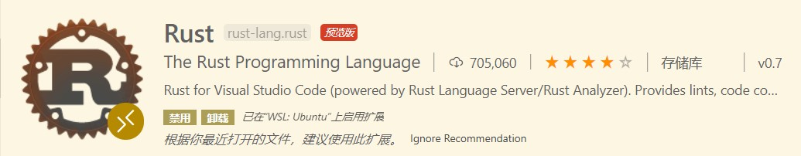

Rust开发环境搭建——WSL+VS CODE
本文最后更新于：2020年11月7日 晚上
为了让本地的环境更加干净便于管理，我正逐渐地把开发环境转移到wsl2中，win环境仅用来作游戏机和一些剪辑工作
下载安装
Rust官网中已经写得很详细了，这是我见过的编程语言中最漂亮的官网，而且官方文档也写得非常好，根据指引操作即可。
安装Rust主要有两种方式，第一种下载 Rustup 安装器并安装MSVC，第二种通过命令行下载。
这里我选择更方便的命令行方式以便安装在 wsl2 中：
# 设置临时镜像加速，使用代理则不需要
export RUSTUP_DIST_SERVER=https://mirrors.ustc.edu.cn/rust-static
export RUSTUP_UPDATE_ROOT=https://mirrors.ustc.edu.cn/rust-static/rustup
# 如果在 WSL1 环境下，可能需要设置这个
export RUSTUP_IO_THREADS=1
# 官网提供的安装命令
curl --proto '=https' --tlsv1.2 -sSf https://sh.rustup.rs | sh根据指引安装，我选择默认的1
在 Rust 开发环境中，所有工具都安装在
~/.cargo/bin目录中，您可以在这里找到包括rustc、cargo和rustup在内的 Rust 工具链。
更改镜像源
[source.crates-io]
registry = "https://github.com/rust-lang/crates.io-index"
# 替换成你偏好的镜像源
replace-with = 'rustcc'
# rustcc 1号源
[source.rustcc]
registry="git://crates.rustcc.com/crates.io-index"
# rustcc 2号源
[source.rustcc2]
registry="git://crates.rustcc.cn/crates.io-index"
# 清华大学
[source.tuna]
registry = "https://mirrors.tuna.tsinghua.edu.cn/git/crates.io-index.git"
# 中国科学技术大学
[source.ustc]
registry = "git://mirrors.ustc.edu.cn/crates.io-index"
# 上海交通大学
[source.sjtu]
registry = "https://mirrors.sjtug.sjtu.edu.cn/git/crates.io-index"
[net]
git-fetch-with-cli = trueHello World
Cargo
在安装 Rustup 时，会同时安装 Rust 构建工具和包管理器的最新稳定版，即 Cargo
检查是否安装了Rust和Cargo，可以在终端中运行：
cargo --version创建一个Hello World
在命令行中运行：
cargo new hello-rust当前目录下会生成一个 hello-rust 的新目录，其中：
hello-rust
|- Cargo.toml # 项目的清单
|- src
|- main.rs # 编写应用代码的地方配置VS Code
安装拓展
首先安装 Rust 拓展和 rust-analyzer 拓展


安装 Better TOML 拓展以便支持 .toml 文件语法高亮

为了能在 vs code 上调试 rust 代码，还需安装 CodeLLDB 拓展

运行hello-rust
在命令行中运行：
code ~/hello-rust # 这里注意选择项目所在路径此时 vs code 右下角会出现相应提示，根据提示操作即可，如果没有提示可以尝试先打开src/main.rs
选择 运行 → 打开配置 此时应该会生成 launch.json 文件并打开
// 生成的launch.json配置如下 2020.11.07
{
// 使用 IntelliSense 了解相关属性。
// 悬停以查看现有属性的描述。
// 欲了解更多信息，请访问: https://go.microsoft.com/fwlink/?linkid=830387
"version": "0.2.0",
"configurations": [
{
"type": "lldb",
"request": "launch",
"name": "Debug executable 'hello-rust'",
"cargo": {
"args": [
"build",
"--bin=hello-rust",
"--package=hello-rust"
],
"filter": {
"name": "hello-rust",
"kind": "bin"
}
},
"args": [],
"cwd": "${workspaceFolder}"
},
{
"type": "lldb",
"request": "launch",
"name": "Debug unit tests in executable 'hello-rust'",
"cargo": {
"args": [
"test",
"--no-run",
"--bin=hello-rust",
"--package=hello-rust"
],
"filter": {
"name": "hello-rust",
"kind": "bin"
}
},
"args": [],
"cwd": "${workspaceFolder}"
}
]
}这时回到 main.rs 打断点，按F5启动调试，假如启动调试失败，观察左下方状态栏，是否未选择LLDB调试：

卸载Rust
执行 rustup self uninstall
本博客所有文章除特别声明外，均采用 CC BY-SA 4.0 协议 ，转载请注明出处！